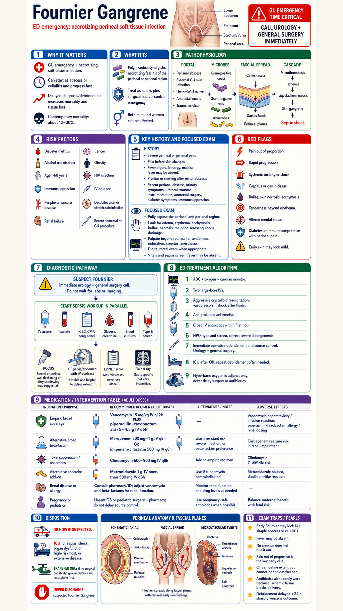

local source_extracts\fournier_gangrene_tintinalli9_extract.txt. This image was generated by Codex built-in image_gen; an earlier generated variant was rejected for medication-table spelling errors, and no post-generation medical text patching was applied.